5. Version 1 : Architecture Spring / JPA
On se propose d’écrire une application console ainsi qu'une application graphique permettant d’établir le bulletin de salaire des assistantes maternelles employées par la "Maison de la petite enfance" d'une commune. Cette application aura l'architecture suivante :
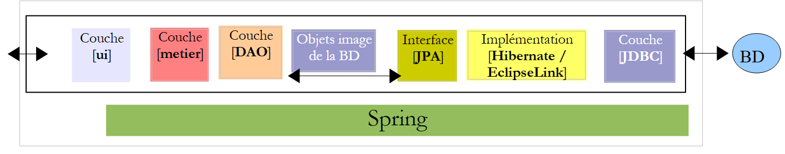 |
5.1. BDLa base de données
Les données statiques utiles pour construire la fiche de paie seront placées dans une base de données que nous désignerons par la suite dbpam. Cette base de données pourrait avoir les tables suivantes :
Structure :
clé primaire | |
n° de version – augmente à chaque modification de la ligne | |
numéro de sécurité sociale de l'employé - unique | |
nom de l'employé | |
son prénom | |
son adresse | |
sa ville | |
son code postal | |
clé étrangère sur le champ [ID] de la table [INDEMNITES] |
Son contenu pourrait être le suivant :
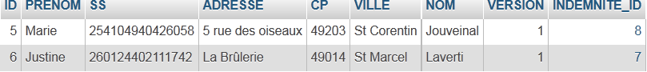
Structure :
clé primaire | |
n° de version – augmente à chaque modification de la ligne | |
pourcentage : contribution sociale généralisée + contribution au remboursement de la dette sociale | |
pourcentage : contribution sociale généralisée déductible | |
pourcentage : sécurité sociale, veuvage, vieillesse | |
pourcentage : retraite complémentaire + assurance chômage |
Son contenu pourrait être le suivant :

Les taux des cotisations sociales sont indépendants du salarié. La table précédente n'a qu'une ligne.
clé primaire | |
n° de version – augmente à chaque modification de la ligne | |
indice de traitement - unique | |
prix net en euro d’une heure de garde | |
indemnité d’entretien en euro par jour de garde | |
indemnité de repas en euro par jour de garde | |
indemnité de congés payés. C'est un pourcentage à appliquer au salaire de base. | |
Son contenu pourrait être le suivant :

On notera que les indemnités peuvent varier d'une assistante maternelle à une autre. Elles sont en effet associées à une assistante maternelle précise via l'indice de traitement de celle-ci. Ainsi Mme Marie Jouveinal qui a un indice de traitement de 2 (table EMPLOYES) a un salaire horaire de 2,1 euro (table INDEMNITES).
5.2. Mode de calcul du salaire d'une assistante maternelle
Nous présentons maintenant le mode de calcul du salaire mensuel d'une assistante maternelle. Il ne prétend pas être celui utilisé dans la réalité. Nous prenons pour exemple, le salaire de Mme Marie Jouveinal qui a travaillé 150 h sur 20 jours pendant le mois à payer.
Les éléments suivants sont pris en compte : | | |
Le salaire de base de l'assistante maternelle est donné par la formule suivante : | ||
Un certain nombre de cotisations sociales doivent être prélevées sur ce salaire de base : | | |
Total des cotisations sociales : | ||
Par ailleurs, l'assistante maternelle a droit, chaque jour travaillé, à une indemnité d'entretien ainsi qu'à une indemnité de repas. A ce titre elle reçoit les indemnités suivantes : | | |
Au final, le salaire net à payer à l'assistante maternelle est le suivant : |
5.3. Fonctionnement de l'application console
Voici un exemple d'exécution de l'application console dans une fenêtre Dos :
On écrira un programme qui recevra les informations suivantes :
- n° de sécurité sociale de l'assistante maternelle ( 254104940426058 dans l'exemple - ligne 1)
- nombre total d'heures travaillées (150 dans l'exemple - ligne 1)
- nombre total de jours travaillés (20 dans l'exemple - ligne 1)
On voit que :
- lignes 9-14 : affichent les informations concernant l'employé dont on a donné le n° de sécurité sociale
- lignes 17-20 : affichent les taux des différentes cotisations
- lignes 23-26 : affichent les indemnités associées à l'indice de traitement de l'employé (ici l'indice 2)
- lignes 29-33 : affichent les éléments constitutifs du salaire à payer
L'application signale les erreurs éventuelles :
Appel sans paramètres :
dos>java -jar pam-spring-ui-metier-dao-jpa-eclipselink.jar
Syntaxe : pg num_securite_sociale nb_heures_travaillées nb_jours_travaillés
Appel avec des données erronées :
dos>java -jar pam-spring-ui-metier-dao-jpa-eclipselink.jar 254104940426058 150x 20x
Le nombre d'heures travaillées [150x] est erroné
Le nombre de jours travaillés [20x] est erroné
Appel avec un n° de sécurité sociale erroné :
dos>java -jar pam-spring-ui-metier-dao-jpa-eclipselink.jar xx 150 20
L'erreur suivante s'est produite : L'employé de n°[xx] est introuvable
5.4. Fonctionnement de l'application graphique
L'application graphique permet le calcul des salaires des assistantes maternelles au travers d'un formulaire Swing :
 |
- les informations passées en paramètres au programme console, sont maintenant saisies au moyen des champs de saisie [1, 2, 3].
- le bouton [4] demande le calcul du salaire
- le formulaire affiche les différents éléments du salaire jusqu'au salaire net à payer [5]
La liste déroulante [1, 6] ne présente pas les n°s SS des employés mais les noms et prénoms de ceux-ci. On fait ici l'hypothèse qu'il n'y a pas deux employés de mêmes nom et prénom.
5.5. Création de la base de données
Nous lançons WampServer et utilisons l'outil PhpMyAdmin [1] :
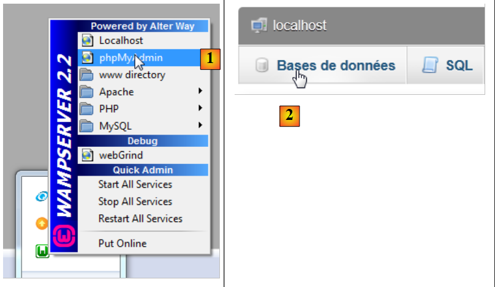 |
- en [2], on prend l'option [Bases de données],
 |
- en [3], on crée une base de données [dbpam_hibernate],
- en [4], la base créée. On la sélectionne,
 |
- en [5], on veut importer un script SQL,
- en [6], on utilise le bouton [Parcourir] pour désigner le fichier,
 |
- en [7,8], on sélectionne le script SQL,
- en [9], on l'exécute,
 |
- en [10], les tables ont été créées. Leur contenu est le suivant :
table EMPLOYES

table INDEMNITES

table COTISATIONS

5.6. Implémentation JPA
5.6.1. Couche JPA / Hibernate
Nous allons configurer la couche JPA dans l'environnement suivant :
 |
Un programme console travaillera avec la base de données. Pour cela, il faut :
- avoir une base de données,
- avoir le pilote JDBC du SGBD, ici MySQL,
- implémenter la couche JPA avec Hibernate,
- écrire le programme console.
Nous créons le projet Maven [mv-pam-jpa-hibernate] [1] :
 |
Dans l'architecture de notre application il nous faut les éléments suivants :
- la base de données,
- le pilote JDBC du SGBD MySQL,
- la couche JPA / Hibernate (entités et configuration),
- le programme console de test.
5.6.1.1. La base de données
Créons tout d'abord la base de données vide. Nous lançons WampServer et utilisons l'outil PhpMyAdmin [1] :
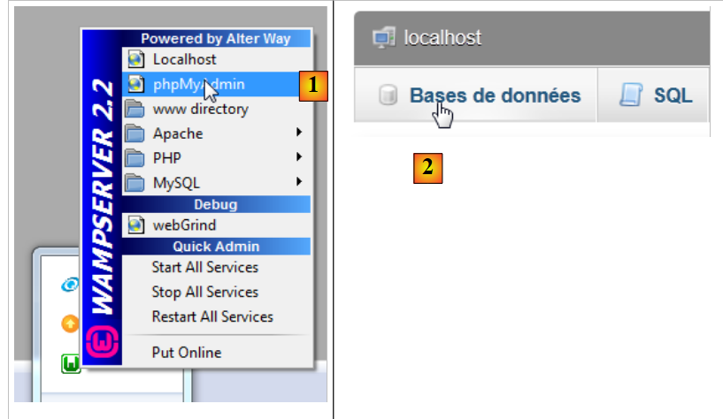 |
- en [2], on prend l'option [Bases de données],
 |
- en [3], on crée une base de données [dbpam_hibernate],
- en [4], la base créée.
5.6.1.2. Configuration de la couche JPA
La liaison entre la couche JDBC et la base de données se fait dans le fichier [persistence.xml] qui configure la couche JPA. Ce fichier peut être construit avec Netbeans :
 |
- dans l'onglet [services] [1], on se connecte à la base de données avec le pilote JDBC de MySQL [2],
- en [3], le nom de la base de données à laquelle on veut se connecter.
- en [4], l'URL JDBC de la base,
- en [5], on se connecte en tant que root sans mot de passe,
- en [6], on peut tester la connexion,
- en [7], la connexion a réussi.
 |
- la connexion apparaît en [8] et en [9],
- en [10], on ajoute un nouvel élément au projet,
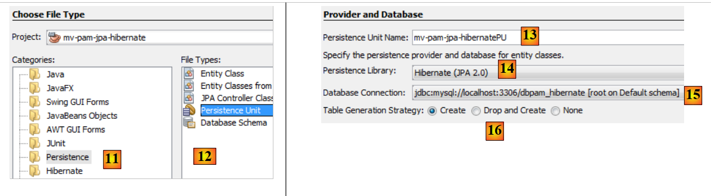 |
- en [11] on choisit la catégorie [Persistence] et en [12] l'élément [Persistence Unit],
- en [13], on donne un nom à cette unité de persistance,
- en [14], on choisit une implémentation Hibernate,
- en [15], on désigne la connexion que nous venons de créer vers la base MySQL,
- en [16], on indique qu'à l'instanciation de la couche JPA, celle-ci doit construire (create) les tables correspondant aux entités JPA du projet.
La fin de l'assistant génère le fichier [persistence.xml] :
 |
- le fichier apparaît dans une nouvelle branche du projet, dans un dossier [META-INF] [1],
- qui correspond au dossier [src/main/resources] du projet [2,3] .
Son contenu est le suivant :
<?xml version="1.0" encoding="UTF-8"?>
<persistence version="2.0" xmlns="http://java.sun.com/xml/ns/persistence" xmlns:xsi="http://www.w3.org/2001/XMLSchema-instance" xsi:schemaLocation="http://java.sun.com/xml/ns/persistence http://java.sun.com/xml/ns/persistence/persistence_2_0.xsd">
<persistence-unit name="mv-pam-jpa-hibernatePU" transaction-type="RESOURCE_LOCAL">
<provider>org.hibernate.ejb.HibernatePersistence</provider>
<properties>
<property name="javax.persistence.jdbc.url" value="jdbc:mysql://localhost:3306/dbpam_hibernate"/>
<property name="javax.persistence.jdbc.password" value=""/>
<property name="javax.persistence.jdbc.driver" value="com.mysql.jdbc.Driver"/>
<property name="javax.persistence.jdbc.user" value="root"/>
<property name="hibernate.cache.provider_class" value="org.hibernate.cache.NoCacheProvider"/>
<property name="hibernate.hbm2ddl.auto" value="create-drop"/>
</properties>
</persistence-unit>
</persistence>
- ligne 3 : le nom de l'unité de persistance et le type de transactions. RESOURCE_LOCAL indique que le projet gère lui-même les transactions. C'est ici le programme console qui devra le faire,
- ligne 4 : l'implémentation JPA utilisée est Hibernate,
- lignes 6-9 : les caractéristiques JDBC de la connexion à la base de données,
- ligne 11 : demande la création des tables correspondant aux entités JPA. En fait, Netbeans génère ici une configuration erreonée. La configuration doit être la suivante :
<property name="hibernate.hbm2ddl.auto" value="create"/>
Avec l'option create, Hibernate, à l'instanciation de la couche JPA, supprime puis crée les tables correspondant aux entités JPA. L'option create-drop fait la même chose mais à la fin de vie de la couche JPA, elle supprime toutes les tables. Il existe une autre option :
<property name="hibernate.hbm2ddl.auto" value="update"/>
Cette option crée les tables si elles n'existent pas mais elle ne les détruit pas si elles existent déjà.
Nous ajouterons trois autres propriétés à la configuration d'Hibernate :
<property name="hibernate.show_sql" value="true"/>
<property name="hibernate.format_sql" value="true"/>
<property name="use_sql_comments" value="true"/>
Elles demandent à Hibernate d'afficher les ordres SQL qu'il envoie à la base de données. Le fichier complet est donc le suivant :
<?xml version="1.0" encoding="UTF-8"?>
<persistence version="2.0" xmlns="http://java.sun.com/xml/ns/persistence" xmlns:xsi="http://www.w3.org/2001/XMLSchema-instance" xsi:schemaLocation="http://java.sun.com/xml/ns/persistence http://java.sun.com/xml/ns/persistence/persistence_2_0.xsd">
<persistence-unit name="mv-pam-jpa-hibernatePU" transaction-type="RESOURCE_LOCAL">
<provider>org.hibernate.ejb.HibernatePersistence</provider>
<class>jpa.Cotisation</class>
<class>jpa.Employe</class>
<class>jpa.Indemnite</class>
<properties>
<property name="javax.persistence.jdbc.url" value="jdbc:mysql://localhost:3306/dbpam_hibernate"/>
<property name="javax.persistence.jdbc.password" value=""/>
<property name="javax.persistence.jdbc.driver" value="com.mysql.jdbc.Driver"/>
<property name="javax.persistence.jdbc.user" value="root"/>
<property name="hibernate.cache.provider_class" value="org.hibernate.cache.NoCacheProvider"/>
<property name="hibernate.hbm2ddl.auto" value="create"/>
<property name="hibernate.show_sql" value="true"/>
<property name="hibernate.format_sql" value="true"/>
<property name="use_sql_comments" value="true"/>
</properties>
</persistence-unit>
</persistence>
5.6.1.3. Les dépendances
Revenons à l'architecture du projet :
 |
Nous avons configuré la couche JPA via le fichier [persistence.xml]. L'implémentation choisie a été Hibernate. Cela a amené des dépendances dans le projet :
 |
Ces dépendances sont dues à l'inclusion d'Hibernate dans le projet. Il nous faut ajouter une autre dépendance, celle du pilote JDBC de MySQL qui implémente la couche JDBC de l'architecture. Nous faisons évoluer le fichier [pom.xml] de la façon suivante :
<dependencies>
<dependency>
<groupId>junit</groupId>
<artifactId>junit</artifactId>
<version>3.8.1</version>
<scope>test</scope>
</dependency>
<dependency>
<groupId>mysql</groupId>
<artifactId>mysql-connector-java</artifactId>
<version>5.1.6</version>
</dependency>
<dependency>
<groupId>org.hibernate</groupId>
<artifactId>hibernate-entitymanager</artifactId>
<version>4.1.2</version>
</dependency>
...
<dependency>
<groupId>org.hibernate.common</groupId>
<artifactId>hibernate-commons-annotations</artifactId>
<version>4.0.1.Final</version>
</dependency>
</dependencies>
Les lignes 8-12 ajoutent la dépendance du pilote JDBC de MySQL.
5.6.1.4. Les entités JPA
 |
Question : En suivant la démarche de l'exemple du paragraphe 4.4, générer les entités [Cotisation, Indemnite, Employe].
Notes :
- les entités feront partie d'un paquetage nommé [jpa],
- chaque entité aura un n° de version,
- si deux entités sont liées par une relation, seule la relation principale @ManyToOne sera construite. La relation inverse @OneToMany ne le sera pas.
5.6.1.5. Le code de la classe principale
Nous incluons dans le projet les entités JPA développées précédemment [1] :
 |
puis nous rajoutons [2], la classe [main.Main] suivante :
package main;
import javax.persistence.EntityManager;
import javax.persistence.EntityManagerFactory;
import javax.persistence.Persistence;
public class Main {
public static void main(String[] args) {
// créer l'Entity Manager suffit à construire la couche JPA
EntityManagerFactory emf = Persistence.createEntityManagerFactory("mv-pam-jpa-hibernatePU");
EntityManager em=emf.createEntityManager();
// libération ressources
em.close();
emf.close();
}
}
- ligne 10 : on crée l'EntityManagerFactory de l'unité de persistance nommée [mv-pam-jpa-hibernatePU]. Ce nom vient du fichier [persistence.xml] :
<persistence-unit name="mv-pam-jpa-hibernatePU" transaction-type="RESOURCE_LOCAL">
...
</persistence-unit>
- ligne 12 : on crée l'EntityManager. Cette création crée la couche JPA. Le fichier [persistence.xml] va être exploité et donc les tables de la base de données vont être créées,
- lignes 14-15 : on libère les ressources.
5.6.1.6. Tests
Revenons à l'architecture de notre projet :
 |
Toutes les couches ont été implémentées. On exécute le projet [2].
 |
Les résultats console sont les suivants :
1 2 3 4 5 6 7 8 9 10 11 12 13 14 15 16 17 18 19 20 21 22 23 24 25 26 27 28 29 30 31 32 33 34 35 36 37 38 39 40 41 42 43 44 45 46 47 48 49 50 51 52 53 54 55 56 57 58 59 60 61 62 63 64 65 66 67 68 69 70 71 72 73 74 75 76 77 78 79 80 81 82 83 84 85 86 87 88 89 90 91 92 93 94 95 96 97 98 99 100 101 102 103 104 105 | |
On trouve dans la console uniquement des logs d'Hibernate puisque le programme exécuté ne fait rien en-dehors d'instancier la couche JPA. On notera les points suivants :
- ligne 43 : Hibernate essaie de supprimer la clé étrangère de la table [EMPLOYES],
- lignes 51-55 : suppression des trois tables,
- ligne 57 : création de la table [COTISATIONS],
- ligne 67 : création de la table [EMPLOYES],
- ligne 80 : création de la table [INDEMNITES],
- ligne 91 : création de la clé étrangère de la table [EMPLOYES].
Dans Netbeans, on peut voir les tables dans la connexion qui a été créée précédemment :
 |
Les tables créées dépendent à la fois de l'implémentation de la couche JPA utilisée et du SGBD utilisé. Ainsi une implémentation JPA / EclipseLink avec la même base de données peut générer des tables différentes. C'est ce que nous allons voir maintenant.
5.6.2. Couche JPA / EclipseLink
Nous allons construire un nouveau projet Maven dans l'environnement suivant :
 |
On suivra la démarche du paragraphe précédent :
- créer une base MySQL [dbpam_eclipselink]. On utilisera le script [dbpam_eclipselink.sql] pour la générer,
- créer le fichier [persistence.xml] du projet. Prendre l'implémentation JPA 2.0 EclipseLink,
- ajouter dans les dépendances générées la dépendance du pilote JDBC de MySQL,
- ajouter les entités JPA et le programme console,
- faire les tests.
Le fichier [persistence.xml] sera le suivant :
<?xml version="1.0" encoding="UTF-8"?>
<persistence version="2.0" xmlns="http://java.sun.com/xml/ns/persistence" xmlns:xsi="http://www.w3.org/2001/XMLSchema-instance" xsi:schemaLocation="http://java.sun.com/xml/ns/persistence http://java.sun.com/xml/ns/persistence/persistence_2_0.xsd">
<persistence-unit name="pam-jpa-eclipselinkPU" transaction-type="RESOURCE_LOCAL">
<provider>org.eclipse.persistence.jpa.PersistenceProvider</provider>
<class>jpa.Cotisation</class>
<class>jpa.Employe</class>
<class>jpa.Indemnite</class>
<properties>
<property name="eclipselink.target-database" value="MySQL"/>
<property name="javax.persistence.jdbc.url" value="jdbc:mysql://localhost:3306/dbpam_eclipselink"/>
<property name="javax.persistence.jdbc.password" value=""/>
<property name="javax.persistence.jdbc.driver" value="com.mysql.jdbc.Driver"/>
<property name="javax.persistence.jdbc.user" value="root"/>
<property name="eclipselink.logging.level" value="FINE"/>
<property name="eclipselink.ddl-generation" value="drop-and-create-tables"/>
</properties>
</persistence-unit>
</persistence>
- les propriétés 9-13 ont été générées par l'assistant Netbeans,
- ligne 14 : cette propriété nous permet de fixer le niveu de logs d'EclipseLink. Le niveau FINE nous permet de connaître les ordres SQL qu'EclipseLink va émettre sur la base de données,
- ligne 15 : à l'instanciation de la couche JPA / EclipseLink, les tables des entités JPA seront détruites puis créées.
Les résultats console obtenus sont les suivants :
- lignes 26-30 : connexion à la base de données MySQL,
- lignes 31-34 : confirmation que la connexion a réussi,
- ligne 36 : suppression de la clé étrangère de la table [EMPLOYES],
- ligne 37 : suppression de la table [COTISATIONS],
- ligne 38 : création de la table [COTISATIONS]. On notera avec intérêt, que la clé primaire ID n'a pas l'attribut MySQL auto_increment. Cela veut dire que ce n'est pas MySQL qui génère les valeurs de la clé primaire,
- ligne 39 : suppression de la table [EMPLOYES],
- ligne 40 : création de la table [EMPLOYES]. Sa clé primaire ID n'a pas l'attribut MySQL auto_increment,
- ligne 41 : suppression de la table [INDEMNITES],
- ligne 42 : création de la table [INDEMNITES]. Sa clé primaire ID n'a pas l'attribut MySQL auto_increment,
- ligne 43 : création de la clé étrangère de la table [EMPLOYES] vers la table [INDEMNITES],
- ligne 44 : création d'une table [SEQUENCE]. Elle sera utilisée pour générer les clés primaires des trois tables précédentes,
- ligne 47 : on a une exception car cette table existait déjà,
- lignes 51-53 : initialisation de la table [SEQUENCE].
L'existence des tables générées peut être vérifiée dans Netbeans [1] :
 |
Donc, à partir des mêmes entités JPA, les implémentations JPA Hibernate et EclipseLink ne génèrent pas les mêmes tables. Dans la suite du document, lorsque l'implémentation JPA utilisée est :
- Hibernate, on utilisera la base de données [dbpam_hibernate],
- EclipseLink, on utilisera la base de données [dbpam_eclipselink].
5.6.3. Travail à faire
En suivant la même démarche que précédemment,
- créer et tester un projet [mv-pam-jpa-hibernate-oracle] utilisant une implémentation JPA Hibernate et un SGBD Oracle,
- créer et tester un projet [mv-pam-jpa-hibernate-mssql] utilisant une implémentation JPA Hibernate et un SGBD SQL server,
- créer et tester un projet [mv-pam-jpa-eclipselink-oracle] utilisant une implémentation JPA EclipseLink et un SGBD Oracle,
- créer et tester un projet [mv-pam-jpa-eclipselink-mssql] utilisant une implémentation JPA EclipseLink et un SGBD SQL server,
5.6.4. Lazy ou Eager ?
Revenons à une définition possible de l'entité [Employe] :
package jpa;
...
@Entity
@Table(name="EMPLOYES")
public class Employe implements Serializable {
@Id
@GeneratedValue(strategy = GenerationType.AUTO)
private Long id;
@Version
@Column(name="VERSION",nullable=false)
private int version;
@Column(name="SS", nullable=false, unique=true, length=15)
private String SS;
@Column(name="NOM", nullable=false, length=30)
private String nom;
@Column(name="PRENOM", nullable=false, length=20)
private String prenom;
@Column(name="ADRESSE", nullable=false, length=50)
private String adresse;
@Column(name="VILLE", nullable=false, length=30)
private String ville;
@Column(name="CP", nullable=false, length=5)
private String codePostal;
@ManyToOne(fetch= FetchType.LAZY)
@JoinColumn(name="INDEMNITE_ID",nullable=false)
private Indemnite indemnite;
...
}
Les lignes 27-29 définissent la clé étrangère de la table [EMPLOYES] vers la table [INDEMNITES]. L'attribut fetch de la ligne 27 définit la stratégie de recherche du champ indemnite de la ligne 29. Il y a deux modes :
- FetchType.LAZY : lorsqu'un employé est cherché, l'indemnité qui lui correspond n'est pas ramenée. Elle le sera lorsque le champ [Employe].indemnite sera référencé pour la première fois.
- FetchType.EAGER : lorsqu'un employé est cherché, l'indemnité qui lui correspond est ramenée. C'est le mode par défaut lorsqu'aucun mode n'est précisé.
Pour comprendre l'intérêt de l'option FetchType.LAZY, on peut prendre l'exemple suivant. Une liste d'employés sans les indemnités est présentée dans une page web avec un lien [Details]. Un clic sur ce lien présente alors les indemnités de l'employé sélectionné. On voit que :
- pour afficher la première page on n'a pas besoin des employés avec leurs indemnités. Le mode FetchType.LAZY convient alors,
- pour afficher la seconde page avec les détails, une requête supplémentaire doit être faite à la base de données pour avoir les indemnités de l'employé sélectionné.
Le mode FetchType.LAZY évite de ramener trop de données dont l'application n'a pas besoin tout de suite. Voyons un exemple.
Le projet [mv-pam-jpa-hibernate] est dupliqué :
 |
- en [1], on copie le projet,
- en [2], on indique le dossier de la copie et en [3] son nom,
- en [4], le nouveau projet porte le même nom que l'ancien. Nous changeons cela :
 |
- en [1], on renomme le projet,
- en [2], on renomme le projet et son artifactId,
- en [3], le nouveau projet.
Nous modifions le programme [Main.java] de la façon suivante :
package main;
import java.util.List;
import javax.persistence.EntityManager;
import javax.persistence.EntityManagerFactory;
import javax.persistence.Persistence;
import jpa.Employe;
public class Main {
// la requête JPQL ci-dessous ramène un employé
// la clé étrangère [Employe].indemnite est en FetchType.LAZY
public static void main(String[] args) {
// créer l'Entity Manager suffit à construire la couche JPA
EntityManagerFactory emf = Persistence.createEntityManagerFactory("pam-jpa-hibernatePU");
// premier essai
EntityManager em = emf.createEntityManager();
Employe employe = (Employe) em.createQuery("select e from Employe e where e.nom=:nom").setParameter("nom", "Jouveinal").getSingleResult();
em.close();
// on affiche l'employé
try {
System.out.println(employe);
} catch (Exception ex) {
System.out.println(ex);
}
// deuxième essai
em = emf.createEntityManager();
employe = (Employe) em.createQuery("select e from Employe e left join fetch e.indemnite where e.nom=:nom").setParameter("nom", "Jouveinal").getSingleResult();
// libérer les ressources
em.close();
// on affiche l'employé
try {
System.out.println(employe);
} catch (Exception ex) {
System.out.println(ex);
}
// libération ressources
emf.close();
}
}
- ligne 15 : on crée l'EntityManagerFactory de la couche JPA,
- ligne 17 : on obtient l'EntityManager qui nous permet de dialoguer avec la couche JPA,
- ligne 18 : on demande l'employé de nom Jouveinal,
- ligne 19 : on ferme l'EntityManager. Cela a pour effet de fermer le contexte de persistence.
- ligne 22 : on affiche l'employé reçu.
La classe [Employe] est la suivante :
package jpa;
...
@Entity
@Table(name="EMPLOYES")
public class Employe implements Serializable {
@Id
@GeneratedValue(strategy = GenerationType.AUTO)
private Long id;
@Version
@Column(name="VERSION",nullable=false)
private int version;
@Column(name="SS", nullable=false, unique=true, length=15)
private String SS;
@Column(name="NOM", nullable=false, length=30)
private String nom;
@Column(name="PRENOM", nullable=false, length=20)
private String prenom;
@Column(name="ADRESSE", nullable=false, length=50)
private String adresse;
@Column(name="VILLE", nullable=false, length=30)
private String ville;
@Column(name="CP", nullable=false, length=5)
private String codePostal;
@ManyToOne(fetch= FetchType.LAZY)
@JoinColumn(name="INDEMNITE_ID",nullable=false)
private Indemnite indemnite;
/**
* Returns a string representation of the object. This implementation constructs
* that representation based on the id fields.
* @return a string representation of the object.
*/
@Override
public String toString() {
return "jpa.Employe[id=" + getId()
+ ",version="+getVersion()
+",SS="+getSS()
+ ",nom="+getNom()
+ ",prenom="+getPrenom()
+ ",adresse="+getAdresse()
+",ville="+getVille()
+",code postal="+getCodePostal()
+",indice="+getIndemnite().getIndice()
+"]";
}
...
}
- ligne 27 : le champ indemnite est ramené en mode LAZY,
- ligne 47 : utilise le champ indemnite. Si la méthode toString est appelée alors que le champ indemnite n'a pas été encore ramené, il le sera à ce moment là. Sauf si le contexte de persistance a été fermé comme dans l'exemple.
Revenons au code du [Main] :
- lignes 21-25 : on devrait avoir une exception. En effet, la méthode toString va être appelée. Elle va utiliser le champ indemnite. Celui-ci va être cherché. Comme le contexte de persistance a été fermé, l'entité [Employe] ramenée n'existe plus d'où l'exception.
- ligne 27 : on crée un nouveau EntityManager,
- ligne 28 : on demande l'employé Jouveinal en demandant explicitement dans la requête JPQL l'indemnité qui va avec. Cette demande explicite est nécessaire parce que le mode de recherche de cette indemnité est LAZY,
- ligne 30 : on ferme l'EntityManager,
- lignes 32-36 : on réaffiche l'employé. Il ne devrait pas y avoir d'exception.
Pour exécuter le projet, on a besoin d'une base de données remplie. On la créera en suivant la démarche du paragraphe 5.5. Par ailleurs, le fichier [persistence.xml] doit être modifié :
<?xml version="1.0" encoding="UTF-8"?>
<persistence version="2.0" xmlns="http://java.sun.com/xml/ns/persistence" xmlns:xsi="http://www.w3.org/2001/XMLSchema-instance" xsi:schemaLocation="http://java.sun.com/xml/ns/persistence http://java.sun.com/xml/ns/persistence/persistence_2_0.xsd">
<persistence-unit name="mv-pam-jpa-hibernatePU" transaction-type="RESOURCE_LOCAL">
<provider>org.hibernate.ejb.HibernatePersistence</provider>
<class>jpa.Cotisation</class>
<class>jpa.Employe</class>
<class>jpa.Indemnite</class>
<properties>
<property name="javax.persistence.jdbc.url" value="jdbc:mysql://localhost:3306/dbpam_hibernate"/>
<property name="javax.persistence.jdbc.password" value=""/>
<property name="javax.persistence.jdbc.driver" value="com.mysql.jdbc.Driver"/>
<property name="javax.persistence.jdbc.user" value="root"/>
<property name="hibernate.cache.provider_class" value="org.hibernate.cache.NoCacheProvider"/>
</properties>
</persistence-unit>
</persistence>
- on a enlevé l'option qui créait les tables. La base de données ici existe déjà et est remplie,
- on a enlevé les options qui faisaient qu'Hibernate loguait les ordres SQL qu'il émettait vers la base de données.
L'exécution du projet donne les deux affichages suivants dans la console :
- ligne 1 : l'exception qui s'est produite lorsqu'il a fallu chercher l'indemnité qui manquait alors que la session était fermée. On voit que l'indemnité n'avait pas été ramenée à cause du mode LAZY,
- ligne 2 : l'employé avec son indemnité obtenue par une requête qui a contourné le mode LAZY.
5.6.5. Travail à faire
En suivant une démarche analogue à celle qui vient d'être suivie, créez un projet [mv-pam-pa-eclipselink-lazy] qui montre le comportement d'EclipseLink face au mode LAZY.
On obtient les résultats suivants :
En mode LAZY, les deux requêtes ont ramené l'indemnité avec l'employé. Lorsqu'on se renseigne sur le net sur cette aberration, on découvre que l'annotation [FetchType.LAZY] (ligne 1) :
@ManyToOne(fetch= FetchType.LAZY)
@JoinColumn(name="INDEMNITE_ID",nullable=false)
private Indemnite indemnite;
n'est pas un ordre mais un souhait. L'implémenteur JPA n'est pas obligé de le suivre. On voit donc que le code devient parfois dépendant de l'implémentation JPA utilisée. Il est possible de donner par configuration à EclipseLink le comportement attendu pour le mode LAZY.
5.6.6. Pour la suite
L'architecture de l'application à construire est la suivante :
 |
Pour la suite du document, on dupliquera le projet Maven [mv-pam-jpa-hibernate] dans le projet [mv-pam-spring-hibernate] [1, 2, 3] :
 |
- puis on renomme le nouveau projet [4, 5, 6].
On changera les dépendances du nouveau projet. Le fichier [pom.xml] devient le suivant :
<project xmlns="http://maven.apache.org/POM/4.0.0" xmlns:xsi="http://www.w3.org/2001/XMLSchema-instance"
xsi:schemaLocation="http://maven.apache.org/POM/4.0.0 http://maven.apache.org/xsd/maven-4.0.0.xsd">
<modelVersion>4.0.0</modelVersion>
<groupId>istia.st</groupId>
<artifactId>mv-pam-spring-hibernate</artifactId>
<version>1.0-SNAPSHOT</version>
<packaging>jar</packaging>
<name>mv-pam-spring-hibernate</name>
<url>http://maven.apache.org</url>
<repositories>
<repository>
<url>http://repo1.maven.org/maven2/</url>
<id>swing-layout</id>
<layout>default</layout>
<name>Repository for library Library[swing-layout]</name>
</repository>
</repositories>
<properties>
<project.build.sourceEncoding>UTF-8</project.build.sourceEncoding>
</properties>
<dependencies>
<dependency>
<groupId>junit</groupId>
<artifactId>junit</artifactId>
<version>4.10</version>
<scope>test</scope>
<type>jar</type>
</dependency>
<dependency>
<groupId>commons-dbcp</groupId>
<artifactId>commons-dbcp</artifactId>
<version>1.2.2</version>
</dependency>
<dependency>
<groupId>commons-pool</groupId>
<artifactId>commons-pool</artifactId>
<version>1.6</version>
</dependency>
<dependency>
<groupId>org.springframework</groupId>
<artifactId>spring-tx</artifactId>
<version>3.1.1.RELEASE</version>
<type>jar</type>
</dependency>
<dependency>
<groupId>org.springframework</groupId>
<artifactId>spring-beans</artifactId>
<version>3.1.1.RELEASE</version>
<type>jar</type>
</dependency>
<dependency>
<groupId>org.springframework</groupId>
<artifactId>spring-context</artifactId>
<version>3.1.1.RELEASE</version>
<type>jar</type>
</dependency>
<dependency>
<groupId>org.springframework</groupId>
<artifactId>spring-orm</artifactId>
<version>3.1.1.RELEASE</version>
<type>jar</type>
</dependency>
<dependency>
<groupId>org.hibernate</groupId>
<artifactId>hibernate-entitymanager</artifactId>
<version>4.1.2</version>
<type>jar</type>
</dependency>
<dependency>
<groupId>mysql</groupId>
<artifactId>mysql-connector-java</artifactId>
<version>5.1.6</version>
</dependency>
<dependency>
<groupId>org.swinglabs</groupId>
<artifactId>swing-layout</artifactId>
<version>1.0.3</version>
</dependency>
</dependencies>
</project>
- lignes 25-31 : la dépendance pour les tests JUnit,
- lignes 32-41 : les dépendances pour le pool de connexions Apache DBCP,
- lignes 42-65 : les dépendances pour le framework Spring,
- lignes 67-71 : les dépendances pour l'implémentation JPA / Hibernate,
- lignes 72-76 : la dépendance pour le pilote JDBC de MySQL,
- lignes 77-81 : la dépendance pour l'interface Swing. Celle-ci est automatiquement ajoutée par Netbeans lorsqu'on ajoute une interface Swing au projet.
Par ailleurs, on génèrera les deux bases MySQL :
- [dbpam_hibernate] à partir du script [dbpam_hibernate.sql],
- [dbpam_eclipselink] à partir du script [dbpam_eclipselink.sql],
5.7. Les interfaces des couches [metier] et [DAO]
Revenons à l'architecture de l'application :
 |
Dans l'architecture ci-dessus, quelle interface doit offrir la couche [DAO] à la couche [metier] et quelle interface doit offrir la couche [metier] à la couche [ui] ? Une première approche pour définir les interfaces des différentes couches est d'examiner les différents cas d'usage (use cases) de l'application. Ici nous en avons deux, selon l'interface utilisateur choisie : console ou formulaire graphique.
Examinons le mode d'utilisation de l'application console :
L'application reçoit trois informations de l'utilisateur (cf ligne 1 ci-dessus)
- le n° de sécurité sociale de l'assistante maternelle
- le nombre d'heures travaillées dans le mois
- le nombre de jours travaillés dans le mois
A partir de ces information et d'autres enregistrées dans des fichiers de configuration, l'application affiche les informations suivantes :
- lignes 4-6 : les valeurs saisies
- lignes 8-10 : les informations liées à l'employé dont on a donné le n° de sécurité sociale
- lignes 12-14 : les taux des différentes cotisations sociales
- lignes 16-17 : les différentes indemnités versées à l'assistante maternelle
- lignes 19-24 : les éléments de la feuille de salaire de l'assistante maternelle
Un certain nombre d'informations doivent être fournies par la couche [metier] à la couche [ui] :
- les informations liées à une assistante maternelle identifiée par son n° de sécurité sociale. On trouve ces informations dans la table [EMPLOYES]. Cela permet d'afficher les lignes 6-8.
- les montants des divers taux de cotisations sociales à prélever sur le salaire brut. On trouve ces informations dans la table [COTISATIONS]. Cela permet d'afficher les lignes 10-12.
- les montants des diverses indemnités liées à la fonction d'assistante maternelle. On trouve ces informations dans la table [INDEMNITES]. Cela permet d'afficher les lignes 14-15.
- les éléments constitutifs du salaire affichés lignes 18-22.
De ceci, on pourrait décider d'une première écriture de l'interface [IMetier] présentée par la couche [metier] à la couche [ui] :
- ligne 1 : les éléments de la couche [metier] sont mis dans le paquetage [metier]
- ligne 5 : la méthode [ calculerFeuilleSalaire ] prend pour paramètres les trois informations acquises par la couche [ui] et rend un objet de type [FeuilleSalaire] contenant les informations que la couche [ui] affichera sur la console. La classe [FeuilleSalaire] pourrait être la suivante :
- ligne 9 : l'employé concerné par la feuille de salaire - information n° 1 affichée par la couche [ui]
- ligne 10 : les différents taux de cotisation - information n° 2 affichée par la couche [ui]
- ligne 11 : les différentes indemnités liées à l'indice de l'employé - information n° 3 affichée par la couche [ui]
- ligne 12 : les éléments constitutifs de son salaire - information n° 4 affichée par la couche [ui]
Un second cas d'usage de la couche [métier] apparaît avec l'interface graphique :
 |
On voit ci-dessus, que la liste déroulante [1, 2] présente tous les employés. Cette liste doit être demandée à la couche [métier]. L'interface de celle-ci évolue alors de la façon suivante :
- ligne [10] : la méthode qui va permettre à la couche [ui] de demander la liste de tous les employés à la couche [métier].
La couche [metier] ne peut initialiser les champs [Employe, Cotisation, Indemnite] de l'objet [FeuilleSalaire] ci-dessus qu'en questionnant la couche [DAO] car ces informations sont dans les tables de la base de données. Il en est de même pour obtenir la liste de tous les employés. On peut créer une interface [DAO] unique gérant l'accès aux trois entités [Employe, Cotisation, Indemnite]. Nous décidons plutôt ici de créer une interface [DAO] par entité.
L'interface [DAO] pour les accès aux entités [Cotisation] de la table [COTISATIONS] sera la suivante :
- ligne 6, l'interface [ICotisationDao] gère les accès à l'entité [Cotisation] et donc à la table [COTISATIONS] de la base de données. Notre application n'a besoin que de la méthode [findAll] de la ligne 16 qui permet de retrouver tout le contenu de la table [COTISATIONS]. On a voulu ici se mettre dans un cas plus général où toutes les opérations CRUD (Create, Read, Update, Delete) sont effectuées sur l'entité.
- ligne 8 : la méthode [create] crée une nouvelle entité [Cotisation]
- ligne 10 : la méthode [edit] modifie une entité [Cotisation] existante
- ligne 12 : la méthode [destroy] supprime une entité [Cotisation] existante
- ligne 14 : la méthode [find] permet de retrouver une entité [Cotisation] existante via son identifiant id
- ligne 16 : la méthode [findAll] rend dans une liste toutes les entités [Cotisation] existantes
Attardons-nous sur la signature de la méthode [create] :
La méthode create a un paramètre cotisation de type Cotisation. Le paramètre cotisation doit être persisté, c.a.d. ici mis dans la table [COTISATIONS]. Avant cette persistance, le paramètre cotisation a un identifiant id sans valeur. Après la persistance, le champ id a une valeur qui est la clé primaire de l'enregistrement ajouté à la table [COTISATIONS]. Le paramètre cotisation est donc un paramètre d'entrée / sortie de la méthode create. Il ne semble pas nécessaire que méthode create rende de plus le paramètre cotisation comme résultat. La méthode appelante détenant une référence sur l'objet [Cotisation cotisation], si celui-ci est modifié, elle a accès à l'objet modifié puisqu'elle a une référence dessus. Elle peut donc connaître la valeur que la méthode create a donné au champ id de l'objet [Cotisation cotisation]. La signature de la méthode pourrait donc être plus simplement :
Lorsqu'on écrit une interface, il est bon de se rappeler qu'elle peut être utilisée dans deux contextes différents : local et distant. Dans le contexte local, la méthode appelante et la méthode appelée sont exécutées dans la même JVM :
 |
Si la couche [metier] fait appel à la méthode create de la couche [DAO], elle a bien une référence sur le paramètre [Cotisation cotisation] qu'elle passe à la méthode.
Dans le contexte distant, la méthode appelante et la méthode appelée sont exécutées dans des JVM différentes :
 |
Ci-dessus, la couche [metier] s'exécute dans la JVM 1 et la couche [DAO] dans la JVM 2 sur deux machines différentes. Les deux couches ne communiquent pas directement. Entre-elles s'intercale une couche qu'on appellera couche de communication [1]. Celle-ci est composée d'une couche d'émission [2] et d'une couche de réception [3]. Le développeur n'a en général pas à écrire ces couches de communication. Elles sont générées automatiquement par des outils logiciels. La couche [metier] est écrite comme si elle s'exécutait dans la même JVM que la couche [DAO]. Il n'y a donc aucune modification de code.
Le mécanisme de communication entre la couche [metier] et la couche [DAO] est le suivant :
- la couche [metier] fait appel à la méthode create de la couche [DAO] en lui passant le paramètre [Cotisation cotisation1]
- ce paramètre est en fait passé à la couche d'émission [2]. Celle-ci va transmettre sur le réseau, la valeur du paramètre cotisation1 et non sa référence. La forme exacte de cette valeur dépend du protocole de communication utilisé.
- la couche de réception [3] va récupérer cette valeur et reconstruire à partir d'elle un objet [Cotisation cotisation2] image du paramètre initial envoyé par la couche [metier]. On a maintenant deux objets identiques (au sens de contenu) dans deux JVM différentes : cotisation1 et cotisation2.
- la couche de réception va passer l'objet cotisation2 à la méthode create de la couche [DAO] qui va le persister en base de données. Après cette opération, le champ id de l'objet cotisation2 a été initialisé par la clé primaire de l'enregistrement ajouté à la table [COTISATIONS]. Ce n'est pas le cas de l'objet cotisation1 sur lequel la couche [metier] a une référence. Si on veut que la couche [metier] ait une référence sur l'objet cotisation2, il faut le lui envoyer. Aussi est-on amenés à changer la signature de la méthode create de la couche [DAO] :
- avec cette nouvelle signature, la méthode create va rendre comme résultat l'objet persisté cotisation2. Ce résultat est rendu à la couche de réception [3] qui avait appelé la couche [DAO]. Celle-ci va rendre la valeur (et non la référence) de cotisation2 à la couche d'émission [2].
- la couche d'émission [2] va récupérer cette valeur et reconstruire à partir d'elle un objet [Cotisation cotisation3] image du résultat rendu par la méthode create de la couche [DAO].
- l'objet [Cotisation cotisation3] est rendu à la méthode de la couche [metier] dont l'appel à la méthode create de la couche [DAO] avait initié tout ce mécanisme. La couche [metier] peut donc connaître la valeur de clé primaire donné à l'objet [Cotisation cotisation1] dont elle avait demandé la persistance : c'est la valeur du champ id de cotisation3.
L'architecture précédente n'est pas la plus courante. On trouve plus fréquemment les couches [metier] et [DAO] dans la même JVM :
 |
Dans cette architecture, ce sont les méthodes de la couche [metier] qui doivent rendre des résultats et non celles de la couche [DAO]. Néanmoins la signature suivante de la méthode create de la couche [DAO] :
nous permet de ne pas faire d'hypothèses sur l'architecture réellement mise en place. Utiliser des signatures qui fonctionneront quelque soit l'architecture retenue, locale ou distante, implique que dans le cas où une méthode appelée modifie certains de ses paramètres :
- ceux-ci doivent faire également partie du résultat de la méthode appelée
- la méthode appelante doit utiliser le résultat de la méthode appelée et non les références des paramètres modifiés qu'elle a transmis à la méthode appelée.
On se laisse ainsi la possibilité de passer une couche d'une architecture locale à une architecture distante sans modification de code. Réexaminons, à cette lumière, l'interface [ICotisationDao] :
- ligne 8 : le cas de la méthode create a été traité
- ligne 10 : la méthode edit utilise son paramètre [Cotisation cotisation1] pour mettre à jour l'enregistrement de la table [COTISATIONS] ayant la même clé primaire que l'objet cotisation. Elle rend comme résultat l'objet cotisation2 image de l'enregistrement modifié. Le paramètre cotisation1 n'est lui pas modifié. La méthode doit rendre cotisation2 comme résultat qu'on soit dans le cadre d'une architecture distante ou locale.
- ligne 12 : la méthode destroy supprime l'enregistrement de la table [COTISATIONS] ayant la même clé primaire que l'objet cotisation passé en paramètre. Celui-ci n'est pas modifié. Il n'a donc pas à être rendu.
- ligne 14 : le paramètre id de la méthode find n'est pas modifié par la méthode. Il n'a pas à faire partie du résultat.
- ligne 16 : la méthode findAll n'a pas de paramètres. On n'a donc pas à l'étudier.
Au final, seule la signature de la méthode create doit être adaptée pour être utilisable dans le cadre d'une architecture distante. Les raisonnements précédents seront valables pour les autres interfaces [DAO]. Nous ne les répèterons pas et utiliserons directement des signatures utilisables aussi bien dans le cadre d'une architecture distante que locale.
L'interface [DAO] pour les accès aux entités [Indemnite] de la table [INDEMNITES] sera la suivante :
- ligne 6, l'interface [IIndemniteDao] gère les accès à l'entité [Indemnite] et donc à la table [INDEMNITES] de la base de données. Notre application n'a besoin que de la méthode [findAll] de la ligne 16 qui permet de retrouver tout le contenu de la table [INDEMNITES]. On a voulu ici se mettre dans un cas plus général où toutes les opérations CRUD (Create, Read, Update, Delete) sont effectuées sur l'entité.
- ligne 8 : la méthode [create] crée une nouvelle entité [Indemnite]
- ligne 10 : la méthode [edit] modifie une entité [Indemnite] existante
- ligne 12 : la méthode [destroy] supprime une entité [Indemnite] existante
- ligne 14 : la méthode [find] permet de retrouver une entité [Indemnite] existante via son identifiant id
- ligne 16 : la méthode [findAll] rend dans une liste toutes les entités [Indemnite] existantes
L'interface [DAO] pour les accès aux entités [Employe] de la table [EMPLOYES] sera la suivante :
- ligne 6, l'interface [IEmployeDao] gère les accès à l'entité [Employe] et donc à la table [EMPLOYES] de la base de données. Notre application n'a besoin que de la méthode [findAll] de la ligne 16 qui permet de retrouver tout le contenu de la table [EMPLOYES]. On a voulu ici se mettre dans un cas plus général où toutes les opérations CRUD (Create, Read, Update, Delete) sont effectuées sur l'entité.
- ligne 8 : la méthode [create] crée une nouvelle entité [Employe]
- ligne 10 : la méthode [edit] modifie une entité [Employe] existante
- ligne 12 : la méthode [destroy] supprime une entité [Employe] existante
- ligne 14 : la méthode [find] permet de retrouver une entité [Employe] existante via son identifiant id
- ligne 16 : la méthode [find(String SS)] permet de retrouver une entité [Employe] existante via son n° SS. Nous avons vu que cette méthode était nécessaire à l'application console.
- ligne 18 : la méthode [findAll] rend dans une liste toutes les entités [Employe] existantes. Nous avons vu que cette méthode était nécessaire à l'application graphique.
5.8. La classe [PamException]
La couche [DAO] va travailler avec l'API JDBC de Java. Cette API lance des exceptions contrôlées de type [SQLException] qui présentent deux inconvénients :
- elles alourdissent le code qui doit obligatoirement gérer ces exceptions avec des try / catch.
- elles doivent être déclarées dans la signature des méthodes de l'interface [IDao] par un "throws SQLException". Ceci a pour conséquence d'empêcher l'implémentation de cette interface par des classes qui lanceraient une exception contrôlée d'un type différent de [SQLException].
Pour remédier à ce problème, la couche [DAO] ne "remontera" que des exceptions non contrôlées de type [PamException].
 |
- la couche [JDBC] lance des exceptions de type [SQLException]
- la couche [JPA] lance des exceptions propres à l'implémentation JPA utilisée
- la couche [DAO] lance des exceptions de type [PamException] non contrôlées
Ceci a deux conséquences :
- la couche [metier] n'aura pas l'obligation de gérer les exceptions de la couche [DAO] avec des try / catch. Elle pourra simplement les laisser remonter jusqu'à la couche [ui].
- les méthodes de l'interface [IDao] n'ont pas à mettre dans leur signature la nature de l'exception [PamException], ce qui laisse la possiblité d'implémenter cette interface avec des classes qui lanceraient un autre type d'exception non contrôlée.
La classe [PamException] sera placée dans le paquetage [exception] du projet Netbeans :
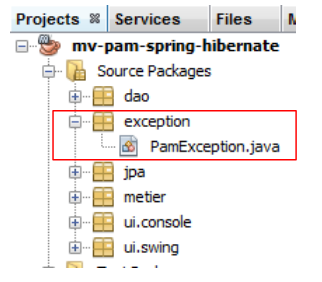 |
Son code est le suivant :
- ligne 4 : [PamException] dérive de [RuntimeException]. C'est donc un type d'exceptions que le compilateur ne nous oblige pas à gérer par un try / catch ou à mettre dans la signature des méthodes. C'est pour cette raison, que [PamException] n'est pas dans la signature des méthodes de l'interface [IDao]. Cela permet à cette interface d'être implémentée par une classe lançant un autre type d'exceptions, pourvu que celui-ci dérive également de [RuntimeException].
- pour différencier les erreurs qui peuvent se produire, on utilise le code erreur de la ligne 7. Les trois constructeurs des lignes 14, 19 et 24 sont ceux de la classe parente [RuntimeException] auxquels on a rajouté un paramètre : celui du code d'erreur qu'on veut donner à l'exception.
Le fonctionnement de l'application, du point de vue des exceptions, sera le suivant :
- la couche [DAO] encapsulera toute exception rencontrée, dans une exception de type [PamException], et relancera cette dernière pour la couche [métier].
- la couche [métier] laissera remonter les exceptions lancées par la couche [DAO]. Elle encapsulera toute exception survenant dans la couche [métier], dans une exception de type [PamException] et relancera cette dernière pour la couche [ui].
- la couche [ui] intercepte toutes les exceptions qui remontent des couches [métier] et [DAO]. Elle se contentera d'afficher l'exception sur la console ou l'interface graphique.
Examinons maintenant successivement l'implémentation des couches [DAO] et [metier].
5.9. La couche [DAO] de l'application [PAM]
Nous nous plaçons dans le cadre de l'architecture suivante :
 |
5.9.1. Implémentation
Lectures conseillées : paragraphe 3.1.3 de [ref1]
Question : En utilisant l'intégration Spring / JPA, écrire les classes [CotisationDao, IndemniteDao, EmployeDao] d'implémentation des interfaces [ICotisationDao, IIndemniteDao, IEmployeDao]. Chaque méthode de classe interceptera une éventuelle exception et l'encapsulera dans une exception de type [PamException] avec un code d'erreur propre à l'exception interceptée.
Les classes d'implémentation feront partie du paquetage [dao] :
 |
5.9.2. Configuration
Lectures conseillées : paragraphe 3.1.5 de [ref1]
L'intégration DAO / JPA est configurée par le fichier Spring [spring-config-dao.xml] et le fichier JPA [persistence.xml] :
 |
Question : écrire le contenu de ces deux fichiers. On supposera que la base de données utilisée est la base MySQL5 [dbpam_hibernate] générée par le script SQL [dbpam_hibernate.sql]. Le fichier Spring définira les trois beans suivants : employeDao de type EmployeDao, indemniteDao de type IndemniteDao, cotisationDao de type CotisationDao. Par ailleurs, l'implémentation JPA utilisée sera Hibernate.
5.9.3. Tests
Lectures conseillées : paragraphes 3.1.6 et 3.1.7 de [ref1]
Maintenant que la couche [DAO] est écrite et configurée, nous pouvons la tester. L'architecture des tests sera la suivante :
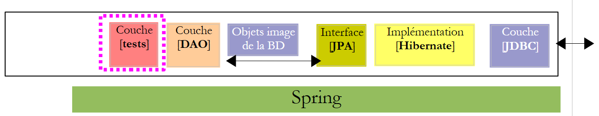 |
5.9.4. InitDB
Nous allons créer deux programmes de tests de la couche [DAO]. Ceux-ci seront placés dans le paquetage [dao] [2] de la branche [Test Packages] [1] du projet Netbeans. Cette branche n'est pas incluse dans le projet généré par l'option [Build project], ce qui nous assure que les programmes de tests que nous y plaçons ne seront pas inclus dans le .jar final du projet.
 |
Les classes placées dans la branche [Test Packages] ont connaissance des classes présentes dans la branche [Source Packages] ainsi que des bibliothèques de classes du projet. Si les tests ont besoin de bibliothèques autres que celles du projet, celles-ci doivent être déclarées dans la branche [Test Libraries] [2].
Les classes de tests utilisent l'outil de tests unitaires JUnit :
- [JUnitInitDB] ne fait aucun test. Elle remplit la base de données avec quelques enregistrements et affiche ensuite ceux-ci sur la console.
- [JUnitDao] fait une série de tests dont elle vérifie le résultat.
Le squelette de la classe [JUnitInitDB] est le suivant :
- la méthode [init] est exécutée avant le début de la série des tests (annotation @BeforeClass). Elle instancie la couche [DAO].
- la méthode [clean] est exécutée avant chaque test (annotation @Before). Elle vide la base de données.
- la méthode [initDB] est un test (annotation @Test). C'est le seul. Un test doit contenir des instructions d'assertion Assert.assertCondition. Ici il n'y en aura aucune. La méthode est donc un faux test. Elle a pour rôle de remplir la base de données avec quelques lignes puis d'afficher le contenu de la base sur la console. Ce sont les méthodes create et findAll des couches [DAO] qui sont ici utilisées.
Question : compléter le code de la classe [JUnitInitDB]. On s'aidera de l'exemple du paragraphe 3.1.6 de [ref1]. Le code génèrera le contenu présenté au paragraphe 5.1.
5.9.5. Mise en oeuvre des tests
Nous sommes désormais prêts pour exécuter [InitDB]. Nous décrivons la procédure avec le SGBD MySQL5 :
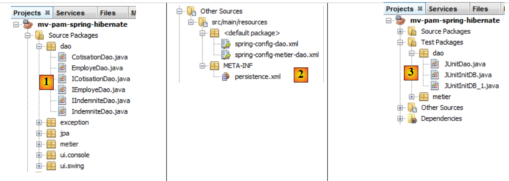 |
- les classes [1], les fichiers de configuration [2] et les classes de test de la couche [DAO] [3]sont mis en place,
 |
- le projet est construit [4]
- la classe [JUnitInitDB] est exécutée [5]. Le SGBD MySQL5 est lancé avec une base [dbpam_hibernate] existante,
- la fenêtre [Test Results] [6] dit que les tests ont été réussis. Ce message n'est pas significatif ici, car le programme [JUnitInitDB] ne contient aucune instruction d'assertion Assert.assertCondition, qui pourrait provoquer l'échec du test. Néanmoins, cela montre qu'il n'y a pas eu d'exception à l'exécution du test.
La fenêtre [Output] contient les logs de l'exécution, ceux de Spring et ceux du test lui-même. Les affichages faits par la classe [JUnitInitDB] sont les suivants :
Les tables [EMPLOYES, INDEMNITES, COTISATIONS] ont été remplies. On peut le vérifier avec une connexion Netbeans à la base [dbpam_hibernate].
 |
- en [1], dans l'onglet [services], on visualise les données de la table [employes] de la connexion [dbpam_hibernate] [2],
- en [3] le résultat.
5.9.6. JUnitDao
Nous nous intéressons maintenant à une seconde classe de tests [JUnitDao] :
 |
Le squelette de la classe sera le suivant :
1 2 3 4 5 6 7 8 9 10 11 12 13 14 15 16 17 18 19 20 21 22 23 24 25 26 27 28 29 30 31 32 33 34 35 36 37 38 39 40 41 42 43 44 45 46 47 48 49 50 51 52 53 54 55 56 57 58 59 60 61 62 63 64 65 66 67 68 69 70 71 72 73 74 75 76 77 78 79 80 81 82 83 84 85 86 87 88 89 90 91 92 93 94 95 96 97 98 99 100 101 102 103 104 105 106 107 108 109 110 111 112 113 114 115 116 117 118 119 120 121 122 123 124 125 126 127 128 129 130 131 132 133 134 135 136 137 138 139 140 141 142 143 144 145 146 147 148 149 150 151 152 153 154 155 156 157 158 159 160 161 162 163 164 165 166 167 168 169 170 171 172 173 174 175 176 177 178 179 180 181 182 183 184 185 186 187 | |
Dans la classe de tests précédente, la base est vidée avant chaque test.
Question : écrire les méthodes suivantes :
1 - test02 : on s'inspirera de test01
2 - test03 : un employé a un champ de type Indemnite. Il faut donc créer une entité Indemnite et une entité Employe
3 - test04.
En procédant de la même façon que pour la classe de tests [JUnitInitDB], on obtient les résultats suivants :
 |
- en [1], on exécute la classe de tests
- en [2], les résultats des tests dans la fenêtre [Test Results]
Provoquons une erreur pour voir comment cela est signalé dans la page des résultats :
Ligne 13, l'assertion va provoquer une erreur, la valeur de Csgrds étant 3.49 (ligne 8). L'exécution de la classe de tests donne les résultats suivants :
 |
- la page des résultats [1] montre maintenant qu'il y a eu des tests non réussis.
- en [2], un résumé de l'exception qui a fait échouer le test. On y trouve le n° de la ligne du code Java où s'est produite l'exception.
5.10. La couche [metier] de l'application [PAM]
Maintenant que la couche [DAO] a été écrite, nous passons à l'étude de la couche métier [2] :
 |
5.10.1. L'interface Java [IMetier]
Celle-ci a été décrite au paragraphe 5.7. Nous la rappelons ci-dessous :
L'implémentation de la couche [metier] sera faite dans un paquetage [metier] :
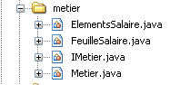 |
Le paquetage [metier] comprendra, outre l'interface [IMetier] et son implémentation [Metier], deux autres classes [FeuilleSalaire] et [ElementsSalaire]. La classe [FeuilleSalaire] a été brièvement présentée au paragraphe 5.7. Nous revenons dessus maintenant.
5.10.2. La classe [FeuilleSalaire]
La méthode [calculerFeuilleSalaire] de l'interface [IMetier] rend un objet de type [FeuilleSalaire] qui représente les différents éléments d'une feuille de salaire. Sa définition est la suivante :
- ligne 7 : la classe implémente l'interface Serializable parce que ses instances sont susceptibles d'être échangées sur le réseau.
- ligne 9 : l'employé concerné par la feuille de salaire
- ligne 10 : les différents taux de cotisation
- ligne 11 : les différentes indemnités liées à l'indice de l'employé
- ligne 12 : les éléments constitutifs de son salaire
- lignes 14-22 : les deux constructeurs de la classe
- lignes 25-27 : méthode [toString] identifiant un objet [FeuilleSalaire] particulier
- lignes 29 et au-delà : les accesseurs publics aux champs privés de la classe
La classe [ElementsSalaire] référencée ligne 11 de la classe [FeuilleSalaire] ci-dessus, rassemble les éléments constituant une fiche de paie. Sa définition est la suivante :
- ligne 3 : la classe implémente l'interface Serializable parce qu'elle est un composant de la classe FeuilleSalaire qui doit être sérialisable.
- ligne 6 : le salaire de base
- ligne 7 : les cotisations sociales payées sur ce salaire de base
- ligne 8 : les indemnités journalières d'entretien de l'enfant
- ligne 9 : les indemnités journalières de repas de l'enfant
- ligne 10 : le salaire net à payer à l'assistante maternelle
- lignes 12-24 : les constructeurs de la classe
- lignes 27-31 : méthode [toString] identifiant un objet [ElementsSalaire] particulier
- lignes 34 et au-delà : les accesseurs publics aux champs privés de la classe
5.10.3. La classe d'implémentation [Metier] de la couche [metier]
La classe d'implémentation [Metier] de la couche [metier] pourrait être la suivante :
- ligne 5 : l'annotation Spring @Transactional fait que chaque méthode de la classe se déroulera au sein d'une transaction.
- lignes 9-10 : les référence sur les couches [DAO] des entités [Cotisation, Employe, Indemnite]
- lignes 14-17 : la méthode [calculerFeuilleSalaire]
- lignes 20-22 : la méthode [findAllEmployes]
- ligne 24 et au-delà : les accesseurs publics des champs privés de la classe
Question : écrire le code de la méthode [findAllEmployes].
Question : écrire le code de la méthode [calculerFeuilleSalaire].
On notera les points suivants :
- le mode de calcul du salaire a été expliqué au paragraphe 5.2.
- si le paramètre [SS] ne correspond à aucun employé (la couche [DAO] a renvoyé un pointeur null), la méthode lancera une exception de type [PamException] avec un code d'erreur approprié.
5.10.4. Tests de la couche [metier]
Nous créons deux programmes de test :
 |
Les classes de tests [3] sont créés dans un paquetage [metier] [2] de la branche [Test Packages] [1] du projet.
La classe [JUnitMetier_1] pourrait être la suivante :
Il n'y a pas d'assertion Assert.assertCondition dans la classe. On cherche simplement à calculer quelques salaires afin de les vérifier ensuite à la main. L'affichage écran obtenu par l'exécution de la classe précédente est le suivant :
- ligne 4 : la feuille de salaire de Justine Laverti
- ligne 5 : la feuille de salaire de Marie Jouveinal
- ligne 6 : l'exception due au fait que l'employé de n° SS 'xx' n'existe pas.
Question : la ligne 17 de [JUnitMetier_1] utilise le bean Spring nommé metier. Donner la définition de ce bean dans le fichier [spring-config-metier-dao.xml].
La classe [JUnitMetier_2] pourrait être la suivante :
La classe [JUnitMetier_2] est une copie de la classe [JUnitMetier_1] où cette fois, des assertions ont été placées dans la méthode test01.
Question : écrire la méthode test01.
Lors de l'exécution de la classe [JUnitMetier_2], on obtient les résultats suivants si tout va bien :

5.11. La couche [ui] de l'application [PAM] – version console
Maintenant que la couche [metier] a été écrite, il nous reste à écrire la couche [ui] [1] :
 |
Nous créerons deux implémentations différentes de la couche [ui] : une version console et une version graphique swing :
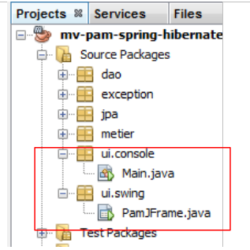 |
5.11.1. La classe [ui.console.Main]
Nous nous intéressons tout d'abord à l'application console implémentée par la classe [ui.console.Main] ci-dessus. Son fonctionnement a été décrit au paragraphe 5.3. Le squelette de la classe [Main] pourrait être le suivant :
Question : compléter le code ci-dessus.
5.11.2. Exécution
Pour exécuter la classe [ui.console.Main], on procèdera de la façon suivante :
 |
- en [1], sélectionner les propriétés du projet,
- en [2], sélectionner la propriété [Run] du projet,
- utiliser le bouton [3] pour désigner la classe (dite classe principale) à exécuter,
- sélectionner la classe [4],
- la classe apparaît en [5]. Celle-ci a besoin de trois arguments pour s'exécuter (n° SS, nombre d'heures travaillées, nombre de jours travaillés). Ces arguments sont placés en [6],
- ceci fait, on peut exécuter le projet [7]. La configuration précédente fait que c'est la classe [ui.console.Main] qui va être exécutée.
Les résultats de l'exécution sont obtenus dans la fenêtre [output] :
 |  |
5.12. La couche [ui] de l'application [PAM] – version graphique
Nous implémentons maintenant la couche [ui] avec une interface graphique :
 |
 |
- en [1], la classe [PamJFrame] de l'interface graphique
- en[2] : l'interface graphique
5.12.1. Un rapide tutoriel
Pour créer l'interface graphique, on pourra procéder de la façon suivante :
 |
- [1] : on crée un nouveau fichier avec le bouton [1] [New File...]
- [2] : on choisit la catégorie du fichier [Swing GUI Forms], c.a.d. formulaires graphiques
- [3] : on choisit le type [JFrame Form], un type de formulaire vide
 |
- [5] : on donne un nom au formulaire qui sera aussi une classe
- [6] : on place le formulaire dans un paquetage
- [8] : le formulaire est ajouté à l'arborescence du projet
- [9] : le formulaire est accessible selon deux perspectives : [Design] [9] qui permet de dessiner les différents composants du formulaire, [Source] [10 ci-dessous] qui donne accès au code Java du formulaire. Au final, un formulaire est une classe Java comme une autre. La perspective [Design] est une facilité pour dessiner le formulaire. A chaque ajout de composant en mode [Design], du code Java est ajouté dans la perspective [Source] pour le prendre en compte.
 |
- [11] : la liste des composants Swing disponibles pour un formulaire est trouvée dans la fenêtre [Palette].
- [12] : la fenêtre [Inspector] présente l'arborescence des composants du formulaire. Les composants ayant une représentation visuelle se retrouveront dans la branche [JFrame], les autres dans la branche [Other Components].
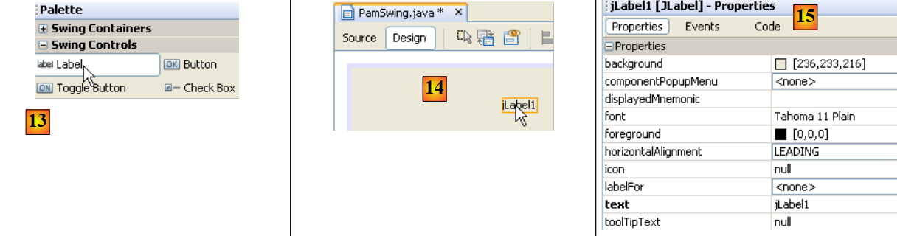 |
- en [13], nous sélectionnons un composant [JLabel] par un clic simple
- en [14], nous le déposons sur le formulaire en mode [Design]
- en [15], nous définissons les propriétés du JLabel (text, font).
 |
- en [16], le résultat obtenu.
- en [17], on demande la prévisualisation du formulaire
- en [18], le résultat
- en [19], le label [JLabel1] a été ajouté à l'arborescence des composants dans la fenêtre [Inspector]
 |
- en [20] et [21] : dans la perspective [Source] du formulaire, du code Java a été ajouté pour gérer le JLabel ajouté.
Un tutoriel sur la construction de formulaires avec Netbeans est disponible à l'url [http://www.netbeans.org/kb/trails/matisse.html].
5.12.2. L'interface graphique [PamJFrame]
On construira l'interface graphique suivante :
 |
- en [1], l'interface graphique
- en [2], l'arborescence de ses composants : un JLabel et six conteneurs JPanel
JLabel1
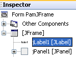 |  |
JPanel1
 |  |
JPanel2
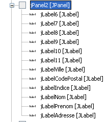 | 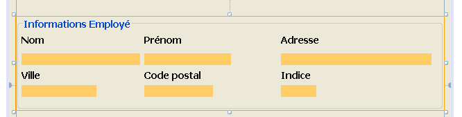 |
JPanel3
 |  |
JPanel4
 | 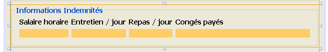 |
JPanel5
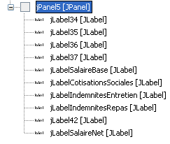 |  |
Travail pratique : construire l'interface graphique précédente en s'aidant du tutoriel [http://www.netbeans.org/kb/trails/matisse.html].
5.12.3. Les événements de l'interface graphique
Lectures conseillées : chapitre [Interfaces graphiques] de [ref2].
Nous gèrerons le clic sur le bouton [jButtonSalaire]. Pour créer la méthode de gestion de cet événement, on pourra procéder comme suit :
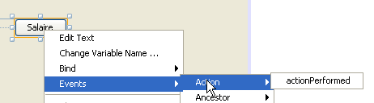 |
Le gestionnaire du clic sur le bouton [JButtonSalaire] est généré :
Le code Java qui associe la méthode précédente au clic sur le bouton [JButtonSalaire] est lui aussi généré :
Ce sont les lignes 2-5 qui indiquent que le clic (evt de type ActionPerformed) sur le bouton [jButtonSalaire] (ligne 2) doit être géré par la méthode [jButtonSalaireActionPerformed] (ligne 4).
Nous gèrerons également, l'événement [caretUpdate] (déplacement du curseur de saisie) sur le champ de saisie [jTextFieldHT]. Pour créer le gestionnaire de cet événement, nous procédons comme précédemment :
 |
Le gestionnaire de l'événement [caretUpdate] sur le champ de saisie [jTextFieldHT] est généré :
Le code Java qui associe la méthode précédente à l'événement [caretUpdate] sur le champ de saisie [jTextFieldHT] est lui aussi généré :
Les lignes 1-4 indiquent que l'événement [caretUpdate] (ligne 2) sur le bouton [jTextFieldHT] (ligne 1) doit être géré par la méthode [ jTextFieldHTCaretUpdate] (ligne 3).
5.12.4. Initialisation de l'interface graphique
Revenons à l'architecture de notre application :
 |
La couche [ui] a besoin d'une référence sur la couche [metier]. Rappelons comment cette référence avait été obtenue dans l'application console :
La méthode est la même dans l'application graphique. Il faut que lorsque celle-ci s'initialise, la référence [IMetier metier] de la ligne 3 ci-dessus soit également initialisée. Le code généré pour l'interface graphique est pour l'instant le suivant :
- lignes 29-35 : la méthode statique [main] qui lance l'application
- ligne 32 : une instance de l'interface graphique [PamJFrame] est créée et rendue visible.
- lignes 7-9 : le constructeur de l'interface graphique.
- ligne 8 : appel à la méthode [initComponents] définie ligne 17. Cette méthode est auto-générée à partir du travail fait en mode [Design]. On ne doit pas y toucher.
- ligne 21 : la méthode qui va gérer le déplacement du curseur de saisie dans le champ [jTextFieldHT]
- ligne 25 : la méthode qui va gérer le clic sur le bouton [jButtonSalaire]
Pour ajouter au code précédent nos propres initialisations, nous pouvons procéder comme suit :
- ligne 4 : on appelle une méthode propriétaire pour faire nos propres initialisations. Celles-ci sont définies par le code des lignes 10-42
Question : en vous aidant des commentaires, compléter le code de la procédure [doMyInit].
5.12.5. Gestionnaires d'événements
Question : écrire la méthode [jTextFieldHTCaretUpdate]. Cette méthode doit faire en sorte que si la donnée présente dans le champ [jTextFieldHT] n'est pas un nombre réel >=0, alors le bouton [jButtonSalaire] doit être inactif.
Question : écrire la méthode [jButtonSalaireActionPerformed] qui doit afficher la feuille de salaire de l'employé sélectionné dans [jComboBoxEmployes].
5.12.6. Exécution de l'interface graphique
Pour exécuter l'interface graphique, on modifiera la configuration [Run] du projet :
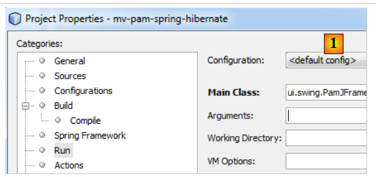 |
- en [1], mettre la classe de l'interface graphique
Le projet doit être complet avec ses fichiers de configuration (persistence.xml, spring-config-metier-dao.xml) et la classe de l'interface graphique. On lancera Le SGBD cible avant d'exécuter le projet.
5.13. Implémentation de la couche JPA avec EclipseLink
Nous nous intéressons à l'architecture suivante où la couche JPA est désormais implémentée par EclipseLink :
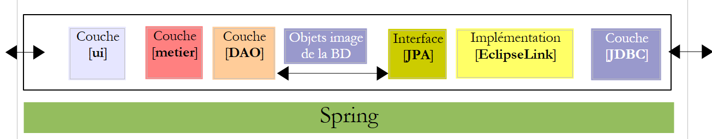 |
5.13.1. Le projet Netbeans
Le nouveau projet Netbeans est obtenu par recopie du projet précédent :
 |
- en [1] : après un clic droit sur le projet Hibernate, choisir Copy
- à l'aide du bouton [2], choisir le dossier parent du nouveau projet. Le nom du dossier apparaît en [3].
- en [4], donner un nom au nouveau projet
- en [5], le nom du dossier du projet
 |
- en [1], le nouveau projet a été créé. Il porte le même nom que l'original,
- en [2] et [3], on le renomme [mv-pam-spring-eclipselink].
Le projet doit être modifié en deux points pour l'adapter à la nouvelle couche JPA / EclipseLink :
- en [4], les fichiers de configuration de Spring doivent être modifiés. On y trouve en effet la configuration de la couche JPA.
- en [5], les bibliothèques du projet doivent être modifiées : celles d'Hibernate doivent être remplacées par celles de EclipseLink.
Commençons par ce dernier point. Le fichier [pom.xml] pour le nouveau projet sera celui-ci :
<project xmlns="http://maven.apache.org/POM/4.0.0" xmlns:xsi="http://www.w3.org/2001/XMLSchema-instance"
xsi:schemaLocation="http://maven.apache.org/POM/4.0.0 http://maven.apache.org/xsd/maven-4.0.0.xsd">
<modelVersion>4.0.0</modelVersion>
<groupId>istia.st</groupId>
<artifactId>mv-pam-spring-eclipselink</artifactId>
<version>1.0-SNAPSHOT</version>
<packaging>jar</packaging>
<name>mv-pam-spring-eclipselink</name>
<url>http://maven.apache.org</url>
<repositories>
<repository>
<url>http://repo1.maven.org/maven2/</url>
<id>swing-layout</id>
<layout>default</layout>
<name>Repository for library Library[swing-layout]</name>
</repository>
<repository>
<url>http://download.eclipse.org/rt/eclipselink/maven.repo/</url>
<id>eclipselink</id>
<layout>default</layout>
<name>Repository for library Library[eclipselink]</name>
</repository>
</repositories>
<properties>
<project.build.sourceEncoding>UTF-8</project.build.sourceEncoding>
</properties>
<dependencies>
<dependency>
<groupId>junit</groupId>
<artifactId>junit</artifactId>
<version>4.10</version>
<scope>test</scope>
<type>jar</type>
</dependency>
<dependency>
<groupId>commons-dbcp</groupId>
<artifactId>commons-dbcp</artifactId>
<version>1.2.2</version>
</dependency>
<dependency>
<groupId>commons-pool</groupId>
<artifactId>commons-pool</artifactId>
<version>1.6</version>
</dependency>
<dependency>
<groupId>org.springframework</groupId>
<artifactId>spring-tx</artifactId>
<version>3.1.1.RELEASE</version>
<type>jar</type>
</dependency>
<dependency>
<groupId>org.springframework</groupId>
<artifactId>spring-beans</artifactId>
<version>3.1.1.RELEASE</version>
<type>jar</type>
</dependency>
<dependency>
<groupId>org.springframework</groupId>
<artifactId>spring-context</artifactId>
<version>3.1.1.RELEASE</version>
<type>jar</type>
</dependency>
<dependency>
<groupId>org.springframework</groupId>
<artifactId>spring-orm</artifactId>
<version>3.1.1.RELEASE</version>
<type>jar</type>
</dependency>
<dependency>
<groupId>org.eclipse.persistence</groupId>
<artifactId>eclipselink</artifactId>
<version>2.3.0</version>
</dependency>
<dependency>
<groupId>org.eclipse.persistence</groupId>
<artifactId>javax.persistence</artifactId>
<version>2.0.3</version>
</dependency>
<dependency>
<groupId>mysql</groupId>
<artifactId>mysql-connector-java</artifactId>
<version>5.1.6</version>
</dependency>
<dependency>
<groupId>org.swinglabs</groupId>
<artifactId>swing-layout</artifactId>
<version>1.0.3</version>
</dependency>
</dependencies>
</project>
- lignes 73-82 : les dépendances pour l'implémentation JPA EclipseLink,
- lignes 19-24 : le dépôt Maven pour EclipseLink.
Les fichiers de configuration de Spring doivent être modifiés pour indiquer que l'implémentation JPA a changé. Dans les deux fichiers, seule la section configurant la couche JPA change. Par exemple dans [spring-config-metier-dao.xml] on a :
Les lignes 19-36 configurent la couche JPA. L'implémentation JPA utilisée est Hibernate (ligne 22). Par ailleurs, la base de données cible est [dbpam_hibernate] (ligne 41).
Pour passer à une implémentation JPA / EclipseLink, les lignes 19-35 ci-dessus sont remplacées par les lignes ci-dessous :
- ligne 5 : l'implémentation JPA utilisée est EclipseLink
- ligne 9 : la propriété databasePlatform fixe le SGBD cible, ici MySQL
- ligne 11 : pour générer les tables de la base de données lorsque la couche JPA est instanciée. Ici, la propriété est en commentaires.
- ligne 7 : pour visualiser sur la console les ordres SQL émis par la couche JPA. Ici, la propriété est en commentaires.
Par ailleurs, la base de données cible devient [dbpam_eclipselink] (ligne 4 ci-dessous) :
5.13.2. Mise en oeuvre des tests
Avant de tester l'application entière, il est bon de vérifier si les tests JUnit passent avec la nouvelle implémentation JPA. Avant de les faire, on commencera par supprimer les tables de la base de données. Pour cela, dans l'onglet [Runtime] de Netbeans, si besoin est, on créera une connexion sur la base dbpam_eclipselink / MySQL5. Une fois connecté à la base dbpam_eclipselink / MySQL5, on pourra procéder à la suppression des tables comme montré ci-dessous :
- [1] : avant la suppression
- [2] : après la suppression
 |
Ceci fait, on peut exécuter le premier test sur la couche [DAO] : InitDB qui remplit la base. Pour que les tables détruites précédemment soient recréées par l'application, il faut s'assurer que dans la configuration JPA / EclipseLink de Spring la ligne :
existe et n'est pas mise en commentaires.
Nous construisons le projet (Build) puis nous exécutons le test [JUnitInitDB] :
 |
- en [1], le test InitDB est exécuté.
- en [2], il échoue. L'exception est lancée par Spring et non par un test qui aurait échoué.
Caused by: org.springframework.beans.factory.BeanCreationException: Error creating bean with name 'entityManagerFactory' defined in class path resource [spring-config-DAO.xml]: Invocation of init method failed; nested exception is java.lang.IllegalStateException: Must start with Java agent to use InstrumentationLoadTimeWeaver. See Spring documentation.
Spring indique qu'il y a un problème de configuration. Le message n'est pas clair. La raison de l'exception a été expliquée au paragraphe 3.1.9 de [ref1]. Pour que la configuration Spring / EclipseLink fonctionne, la JVM qui exécute l'application doit être lancée avec un paramètre particulier, un agent Java. La forme de ce paramètre est la suivante :
[spring-agent.jar] est l'agent Java dont a besoin la JVM pour gérer la configuration Spring / EclipseLink.
Lorsqu'on exécute un projet, il est possible de passer des arguments à la JVM :
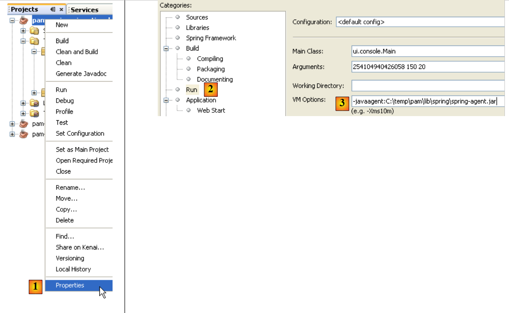 |
- en [1], on accède aux propriétés du projet
- en [2], les propriété du Run
- en [3], on passe le paramètre -javaagent à la JVM
5.13.3. InitDB
Maintenant, nous sommes prêts pour tester de nouveau [InitDB]. Cette fois-ci les résultats obtenus sont les suivants :
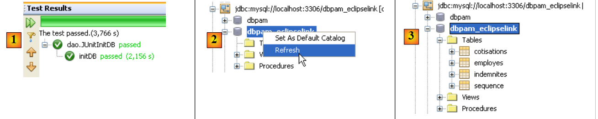 |
- en [1], le test a été réussi
- en [2], dans l'onglet [Services], on rafraîchit la connexion qu'a Netbeans avec la base [dbpam_eclipselink]
- en [3], quatre tables ont été créées
 |
- en [5], on visualise le contenu de la table [employes]
- en [6], le résultat.
5.13.4. JUnitDao
L'exécution de la classe de tests [JUnitDao] peut échouer, même si avec l'implémentation JPA / Hibernate, elle avait réussi. Pour comprendre pourquoi, analysons un exemple.
La méthode testée est la méthode IndemniteDao.create suivante :
- lignes 15-22 : la méthode testée
La méthode de test est la suivante :
package dao;
...
public class JUnitDao {
// couches DAO
static private IEmployeDao employeDao;
static private IIndemniteDao indemniteDao;
static private ICotisationDao cotisationDao;
@BeforeClass
public static void init() {
// log
log("init");
// configuration de l'application
ApplicationContext ctx = new ClassPathXmlApplicationContext("spring-config-DAO.xml");
// couches DAO
employeDao = (IEmployeDao) ctx.getBean("employeDao");
indemniteDao = (IIndemniteDao) ctx.getBean("indemniteDao");
cotisationDao = (ICotisationDao) ctx.getBean("cotisationDao");
}
@Before()
public void clean() {
// on vide la base
for (Employe employe : employeDao.findAll()) {
employeDao.destroy(employe);
}
for (Cotisation cotisation : cotisationDao.findAll()) {
cotisationDao.destroy(cotisation);
}
for (Indemnite indemnite : indemniteDao.findAll()) {
indemniteDao.destroy(indemnite);
}
}
// logs
private static void log(String message) {
System.out.println("----------- " + message);
}
// tests
….
@Test
public void test05() {
log("test05");
// on crée deux indemnités avec le même indice
// enfreint la contrainte d'unicité de l'indice
boolean erreur = true;
Indemnite indemnite1 = null;
Indemnite indemnite2 = null;
Throwable th = null;
try {
indemnite1 = indemniteDao.create(new Indemnite(1, 1.93, 2, 3, 12));
indemnite2 = indemniteDao.create(new Indemnite(1, 1.93, 2, 3, 12));
erreur = false;
} catch (PamException ex) {
th = ex;
// vérifications
Assert.assertEquals(31, ex.getCode());
} catch (Throwable th1) {
th = th1;
}
// vérifications
Assert.assertTrue(erreur);
// chaîne des exceptions
System.out.println("Chaîne des exceptions --------------------------------------");
System.out.println(th.getClass().getName());
while (th.getCause() != null) {
th = th.getCause();
System.out.println(th.getClass().getName());
}
// la 1ère indemnité a du être persistée
Indemnite indemnite = indemniteDao.find(indemnite1.getId());
// vérification
Assert.assertNotNull(indemnite);
Assert.assertEquals(1, indemnite.getIndice());
Assert.assertEquals(1.93, indemnite.getBaseHeure(), 1e-6);
Assert.assertEquals(2, indemnite.getEntretienJour(), 1e-6);
Assert.assertEquals(3, indemnite.getRepasJour(), 1e-6);
Assert.assertEquals(12, indemnite.getIndemnitesCP(), 1e-6);
// la seconde indemnité n'a pas du être persistée
List<Indemnite> indemnites = indemniteDao.findAll();
int nbIndemnites = indemnites.size();
Assert.assertEquals(nbIndemnites, 1);
}
...
}
Question : expliquer ce que fait le test test05 et indiquer les résultats attendus.
Les résultats obtenus avec une couche JPA / Hibernate sont les suivants :
Le test passe, c.a.d. que les assertions sont vérifiées et il n'y a pas d'exception qui sort de la méthode de test.
Question : expliquer ce qui s'est passé.
Les résultats obtenus avec une couche JPA / EclipseLink sont les suivants :
Comme précédemment avec Hibernate, le test passe, c.a.d. que les assertions sont vérifiées et il n'y a pas d'exception qui sort de la méthode de test.
Question : expliquer ce qui s'est passé.
Question : de ces deux exemples, que peut-on conclure de l'interchangeabilité des implémentations JPA ? Est-elle totale ici ?
5.13.5. Les autres tests
Une fois la couche [DAO] testée et considérée correcte, on pourra passer aux tests de la couche [metier] et à ceux du projet lui-même dans sa version console ou graphique. Le changement d'implémentation JPA n'influe en rien sur les couches [metier] et [ui] et donc si ces couches fonctionnaient avec Hibernate, elles fonctionneront avec EclipseLink à quelques exceptions près : l'exemple précédent montre en effet que les exceptions lancées par les couches [DAO] peuvent différer. Ainsi dans le cas d'utilisation du test, Spring / JPA / Hibernate lance une exception de type [PamException], une exception propre à l'application [pam] alors que Spring / JPA / EclipseLink lui, lance une exception de type [TransactionSystemException], une exception du framework Spring. Si dans le cas d'usage du test, la couche [ui] attend une exception de type [PamException] parce qu'elle a été construite avec Hibernate, elle ne fonctionnera plus lorsqu'on passera à EclipseLink.
5.13.6. Travail à faire
Travail pratique : refaire les tests des applications console et swing avec différents SGBD : MySQL5, Oracle XE, SQL Server.